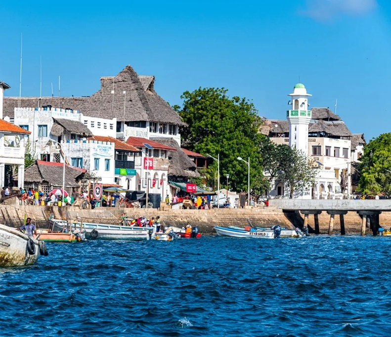

There are no cars on Lamu Island. This single fact — more than anything else — explains why Lamu feels so profoundly different from everywhere else in Kenya. The only sounds are the clip-clop of donkey hooves on coral stone, the call to prayer drifting from the mosque, the creak of dhow sails on the channel, and the laughter of children playing in the maze of narrow alleyways that wind through one of the oldest and best-preserved Swahili settlements in East Africa.
Lamu Old Town is a UNESCO World Heritage Site — a living, breathing medieval city of coral-stone houses with intricately carved wooden doors, rooftop terraces, and hidden inner courtyards that have changed little in centuries. Founded in the 14th century, Lamu was a major centre of Swahili culture, Islamic scholarship, and Indian Ocean trade long before Nairobi existed. This 4-day escape takes you deep into that history while also giving you time on Lamu's magnificent beaches — Shela Beach stretches for 12 kilometres of undeveloped white sand, backed by ancient dunes, with the warm Indian Ocean lapping at the shore.
Fly from Nairobi Wilson Airport to Lamu Airport on Manda Island (approx. 1 hour). Board a motorised boat across the channel to Lamu town — arriving by sea with the white-washed houses of the old town rising from the waterfront is one of the great travel arrivals in East Africa. Check in to your boutique guesthouse in the old town — traditional Swahili architecture with carved wooden furniture, rooftop terraces, and inner courtyards. Afternoon orientation walk through the old town's main waterfront street and the famous Lamu Museum. Sunset dhow sail on the channel. Welcome seafood dinner at a waterfront restaurant.
A full morning getting lost in Lamu's extraordinary labyrinth of narrow alleyways with your guide — discover hidden mosques, centuries-old carved doors (Lamu has over 500 unique carved wooden doors), the bustling Usita wa Mui market, the old fort, and the donkey sanctuary where Lamu's working donkeys receive veterinary care. Afternoon at Shela Beach — a 30-minute walk or short boat ride from the old town — for swimming and relaxation on one of Kenya's most beautiful and undeveloped beaches. Evening dinner at a rooftop restaurant with channel views.
Board a traditional hand-built Swahili dhow for a full day sailing excursion on the Lamu Archipelago. Sail to the uninhabited islands of Manda Toto and Pate Channel — snorkel above pristine coral reefs, swim in sheltered lagoons, and enjoy a fresh seafood barbecue lunch cooked by your crew on a deserted beach. Sail back to Lamu as the sun sets over the mangroves. This is one of the most peaceful and magical days you'll spend anywhere in Kenya.
Final morning at Shela Beach — one last swim in the warm Indian Ocean or a walk along the dunes. Return to Lamu town by boat, transfer to Lamu Airport for flight back to Nairobi. Arrive Nairobi by early afternoon.